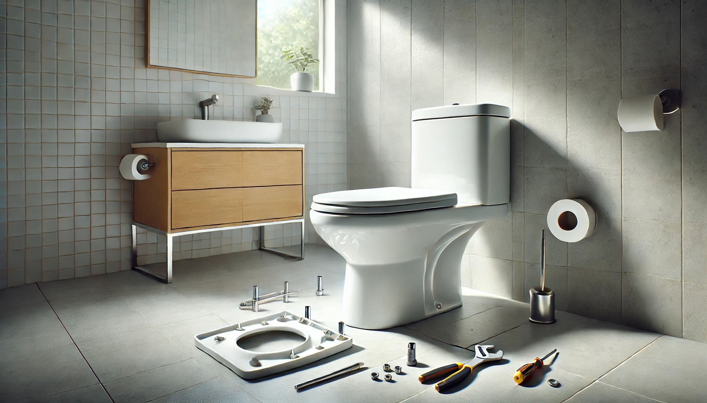

How to Install (or Replace) a Toilet Seat: Complete Step-by-Step Guide

Home & Bath Product Researcher | DIY Installation Guide Author
Quick Answer: How to Install a Toilet Seat
Remove the old seat by unscrewing the bolts at the back of the bowl, then drop the new seat into the bolt holes, tighten the nuts, and test for stability. Total time: 10-15 minutes. No plumber needed. Our easiest-to-install pick: Mayfair Linden ($33.49).

Replacing a toilet seat is one of the simplest home improvement projects you can tackle -- yet millions of people pay plumbers $75-150 to do it. With the right guide and 15 minutes of your time, you can save that money and get it done yourself.
Whether your current seat is cracked, yellowed, loose, or you are simply upgrading to a soft-close model, the installation process is nearly identical across all brands and types. No plumbing skills are required -- you are not touching water lines, drains, or seals. It is purely mechanical: unbolt the old seat, bolt on the new one.
In this guide, we walk through the complete process step by step, cover the most common mistakes (and how to avoid them), and recommend 5 toilet seats that are specifically designed for easy DIY installation. For help choosing between seat shapes, see our elongated vs round guide.
Recommended seats range from $18.56 to $69.32, and every one can be installed with nothing more than a wrench and a screwdriver.

Mayfair Linden Slow Close
STA-TITE fastening system installs from the top -- no reaching underneath the bowl. Slow-close hinges and DuraGuard finish. Elongated size.
Check Price on AmazonBefore You Start: Measuring Your Toilet & Gathering Tools
Before you buy a replacement seat or start unbolting anything, you need to know two things: your toilet bowl shape and the bolt hole spacing. Getting either wrong means a trip back to the store.
How to Measure Your Toilet for the Right Seat
There are two standard toilet bowl shapes in the US. Here is how to identify yours in 30 seconds:
- Find the bolt holes -- the two holes at the back of the bowl where the seat attaches
- Measure from the center of the bolt holes to the front rim of the bowl (center of the front, not the sides)
- Check the measurement:
- ~16.5 inches = Round -- the classic circular shape, common in smaller bathrooms
- ~18.5 inches = Elongated -- the oval shape, standard in modern homes
- Measure bolt hole spacing -- it should be 5.5 inches center-to-center (this is standard for virtually all US toilets)
Tools You Will Need
Installation Checklist (Print This)
- Adjustable wrench or pliers (for metal bolts on old seats)
- Flathead screwdriver (to hold bolt from top while tightening nut below)
- Towel or rag (to clean the mounting area)
- All-purpose bathroom cleaner
- New toilet seat (verify shape before opening the package)
- Optional: penetrating oil (WD-40) if old bolts are corroded
- Optional: hacksaw (last resort for rusted-on metal bolts)
How to Remove the Old Toilet Seat (5 Minutes)
Removing the old seat is usually the hardest part of the job -- not because it is complicated, but because old bolts can be corroded. Here is how to handle every scenario.
1 Locate the Bolts
At the back of the toilet bowl, you will see two bolt covers (usually plastic caps). Pry them open with your fingers or a flathead screwdriver to reveal the bolt heads underneath.
2 Unscrew the Bolts
Plastic bolts: Simply unscrew the nut from underneath the bowl by hand, or use pliers. Hold the bolt head from the top with a screwdriver while turning the nut below.
Metal bolts: Use an adjustable wrench on the nut below. If corroded, spray WD-40, wait 10 minutes, then try again. As a last resort, cut through metal bolts with a hacksaw.
3 Lift Off the Old Seat
Once both bolts are removed, lift the entire seat and lid assembly straight up. It should come off cleanly.
4 Clean the Mounting Area
Clean the bolt holes and the area around them with bathroom cleaner and a rag. Years of grime accumulate here. Let it dry before installing the new seat.
Step-by-Step: Installing the New Toilet Seat (10 Minutes)
With the old seat removed and the area cleaned, installing the new seat is straightforward. Most modern seats use plastic bolts that tighten by hand.
1 Unpack and Identify Parts
Lay out all components: seat, lid, bolts, washers, nuts, and any proprietary tightening tools. Read the included instructions to identify any brand-specific steps. Most seats come with 2 bolts, 2 washers, and 2 nuts.
2 Align the Seat over the Bolt Holes
Place the seat on the bowl with the hinges at the back. Align the hinge bolt holes with the bowl's bolt holes. The seat should sit flat and centered on the bowl rim.
3 Insert the Bolts from the Top
Drop the bolts through the hinge holes and through the bowl holes. Place the washer on the bolt underneath the bowl (between the bolt and the porcelain), then thread the nut onto the bolt.
4 Tighten Evenly (The Key Step)
This is where most people make mistakes. Tighten both bolts alternately -- a few turns on the left, then a few on the right. Do not fully tighten one side before starting the other, or the seat will sit crooked.
Tighten until the seat does not shift when you push it side to side. Do not overtighten plastic bolts -- they will crack. Hand-tight plus a quarter turn with a wrench is sufficient.
5 Test and Adjust
Sit on the seat and shift your weight left and right. If it moves, tighten the bolts slightly more. Open and close the lid -- it should move smoothly. For soft-close seats, test that the lid lowers slowly and quietly without slamming.
6 Snap the Bolt Covers Closed
Push the plastic bolt covers over the bolt heads until they click into place. This hides the hardware and gives a finished look.
5 Best Toilet Seats for Easy DIY Installation
Not all toilet seats are created equal when it comes to installation ease. These 5 picks feature tool-free or simplified mounting systems that make DIY installation as painless as possible.
1. Mayfair Linden Slow Close Toilet Seat
Best For: Easiest installation, most homes, elongated toilets
- STA-TITE top-tightening system -- install from above
- Slow-close lid prevents slamming
- DuraGuard antimicrobial finish
- Elongated shape fits modern toilets
- Heavy-duty molded wood construction
Pros
- Top-tightening bolts -- no reaching underneath
- 28,000+ reviews confirm easy install
- Slow-close mechanism is quiet
- Stays tight -- will not loosen over time
Cons
- Molded wood heavier than plastic
- Only available in white
The Mayfair Linden's STA-TITE system is the gold standard for easy toilet seat installation. Unlike traditional seats that require you to reach under the bowl to tighten nuts, this seat uses a top-mounted bolt system. You simply drop the bolts through, spin the tightening wheel from above, and you are done. It genuinely takes under 5 minutes.
The slow-close hinge is a bonus -- no more seat slamming at 2 AM. The DuraGuard finish resists stains, chips, and bacteria. At $33.49, it is the sweet spot between budget plastic and premium ceramic seats. For more soft-close options, see our dedicated roundup.
Check Price on Amazon
2. KOHLER Brevia Slow Close Elongated
Best For: KOHLER toilet owners, value seekers, elongated bowls
- Grip-Tight bumpers prevent shifting
- Quick-Attach hardware for fast install
- Quiet-Close lid technology
- Color-matched to KOHLER toilets
- Durable polypropylene plastic
Pros
- Quick-Attach cuts install time in half
- KOHLER brand quality and warranty
- Under $31 -- great value
Cons
- Plastic feels lighter than wood seats
- White only
KOHLER's Quick-Attach hardware uses a single bolt that tightens from above with a proprietary tool (included). The Grip-Tight bumpers create a friction seal with the bowl that prevents the lateral shifting that plagues cheaper seats. If you own a KOHLER toilet, this is the obvious choice for perfect color matching and guaranteed fit.
At $30.81, it undercuts the Mayfair Linden slightly while offering KOHLER's build quality and the Quiet-Close mechanism that gently lowers the lid. Installation takes about 10 minutes even for a first-timer.
Check Price on Amazon
3. Bemis 1500EC Lift-Off Wood Seat
Best For: Budget replacement, rental apartments, quick installs
- Easy Clean lift-off hinges for removal
- Enameled wood for durability
- Standard bolt pattern fits all toilets
- Elongated shape
- Available in 15+ colors
Pros
- Under $19 -- cheapest quality option
- 40,000+ positive reviews
- Lift-off design for easy cleaning
Cons
- No slow-close -- lid slams shut
- Bottom-mount bolts (slightly harder install)
At $18.56, the Bemis 1500EC is the best-selling toilet seat on Amazon for good reason. Its lift-off hinge lets you remove the entire seat for deep cleaning with a simple twist -- a feature that costs $30+ on other brands. The enameled wood construction is solid and scratch-resistant, and it is available in more colors than any other seat we tested.
The trade-off is no slow-close mechanism and bottom-mount bolts (you will need to reach under the bowl). But for a basic replacement in a rental apartment or guest bathroom, this delivers excellent quality at an unbeatable price. See our complete best toilet seats roundup for more options.
Check Price on Amazon
4. Bath Royale Slow Close BR501
Best For: Master bathrooms, quality-focused buyers, long-term durability
- Heavy-duty polypropylene -- supports 300+ lbs
- Quick-release hinges for easy cleaning
- Soft-close with metal dampers
- Stainless steel bolts -- corrosion-proof
- Ergonomic contoured shape
Pros
- Highest quality construction in class
- Metal dampers outlast plastic ones
- Stainless steel hardware
- 4.6 star rating
Cons
- Higher price than competitors
- Only elongated shape available
The Bath Royale BR501 is the buy-it-once premium option. While it costs more upfront, its metal slow-close dampers (vs. plastic on cheaper seats) last 3-5x longer, and the stainless steel bolts will never corrode -- meaning your next replacement in 7-10 years will be just as easy as this install.
The quick-release hinges let you pop the seat off with one hand for cleaning, and the contoured seat shape is noticeably more comfortable than flat plastic alternatives. If your bathroom needs include long-term comfort and durability, this is the seat to invest in.
Check Price on Amazon
5. KOHLER Cachet ReadyLatch Round
Best For: Round toilets, small bathrooms, KOHLER owners
- ReadyLatch system -- fastest install on market
- Grip-Tight bumpers prevent shifting
- Quiet-Close lid with premium dampers
- Round shape for compact toilets
- Color-matched to KOHLER white
Pros
- ReadyLatch = tool-free install
- 41,000+ reviews -- proven reliability
- Best option for round bowls
Cons
- Higher price for a round seat
- White only
Most premium seats only come in elongated. The KOHLER Cachet is the rare exception -- a high-quality soft-close seat designed specifically for round toilets. Its ReadyLatch system is arguably the fastest install mechanism available: you slide the latch into the bolt holes, twist to lock, and you are done. No tools, no reaching, no frustration.
At $48.59 it is not cheap for a round seat, but the KOHLER build quality and Quiet-Close mechanism justify the premium. If you have a round toilet in a family bathroom, this is the best seat you can install.
Check Price on AmazonBuying Guide: How to Choose the Right Replacement Toilet Seat
Beyond shape (round vs elongated), here are the key factors that affect both installation ease and long-term satisfaction.
Mounting System (Affects Install Difficulty)
This is the single biggest factor in installation ease:
- Top-mount (Easiest): Bolts insert and tighten from above. No reaching under the bowl. Used by Mayfair STA-TITE and KOHLER Quick-Attach.
- ReadyLatch (Fastest): Slide-and-twist mechanism. Completely tool-free. KOHLER Cachet exclusive.
- Bottom-mount (Standard): Traditional style where you tighten nuts from underneath. Slightly more awkward but works fine with a wrench.
Material (Affects Comfort and Durability)
- Polypropylene plastic: Lightweight, affordable, crack-resistant. The standard for modern seats. Lasts 5-7 years.
- Enameled/molded wood: Heavier, warmer to sit on, feels more solid. Lasts 7-10 years. More color options.
- Thermoset/Duroplast: Premium plastic that resists yellowing and scratching. Higher price but longest lifespan.
Features Worth Paying For
- Slow-close hinges ($5-15 premium): Eliminates slamming. Essential for families with kids. See our soft-close guide.
- Quick-release hinges ($5-10 premium): Lets you pop the seat off for deep cleaning. Worth it for hygiene.
- Stainless steel hardware ($10-20 premium): Never corrodes. Makes future replacement easy.
Troubleshooting Common Installation Problems
Even simple installations can hit snags. Here are the most common problems and their solutions.
Problem: Old Bolts Will Not Unscrew
Cause: Corroded metal bolts, often from years of moisture exposure.
Fix: Spray WD-40 or PB Blaster penetrating oil on both the bolt head and nut. Wait 15-20 minutes. Try again with a wrench. If still stuck, use a hacksaw to cut through the bolt between the bowl and the nut. Protect the porcelain with tape.
Problem: New Seat Shifts Side to Side
Cause: Bolts not tightened enough, or bolt holes in the bowl are oversized.
Fix: Tighten bolts another quarter turn. If still loose, add rubber washers between the bolt and the bowl to fill the gap. Some seats include rubber bushings for this exact purpose.
Problem: Seat Does Not Sit Flat on the Bowl
Cause: Wrong shape (elongated seat on round bowl or vice versa), or debris under the mounting points.
Fix: Verify the shape matches. Clean the mounting surface. Check that washers are installed correctly (washer between nut and porcelain, not between bolt head and hinge).
Problem: Slow-Close Mechanism Does Not Work
Cause: Hinge is locked for shipping, or damper is not engaged.
Fix: Check for a shipping lock tab or clip (usually red or orange plastic). Remove it. If the damper still does not engage, the seat may be defective -- contact the manufacturer for warranty replacement.
Frequently Asked Questions About Toilet Seat Installation
Q: How long does it take to install a toilet seat?
A standard installation takes 10-15 minutes with basic tools. If replacing an old seat with corroded bolts, allow 20-30 minutes for removal. Quick-release seats like the Bemis 1500EC and ReadyLatch models like KOHLER Cachet install in under 5 minutes.
Q: What tools do I need to install a toilet seat?
You need an adjustable wrench (or pliers), a flathead screwdriver, and a towel. Some toilet seats include a proprietary tightening tool. No power tools are required. Many modern seats use hand-tightened plastic bolts that need no tools at all.
Q: How do I know if I need a round or elongated toilet seat?
Measure from the center of the bolt holes to the front of the bowl. If the distance is about 16.5 inches, you have a round toilet. If it is about 18.5 inches, you have an elongated toilet. The bolt hole spacing is standard at 5.5 inches for both types. See our shape comparison guide for visual examples.
Q: Can I install a toilet seat myself without a plumber?
Absolutely. Toilet seat installation is one of the simplest home projects. No plumbing skills are needed -- you are only attaching a seat to the bowl with bolts. No water lines are involved. A plumber would charge $75-150 for a job you can do in 15 minutes.
Q: Why does my new toilet seat move side to side?
A toilet seat that shifts has loose bolts. Lift the bolt covers, tighten the nuts underneath with a wrench (hand-tight plus a quarter turn), and test again. If it still moves, the bolt holes may be worn -- use rubber washers or bolt stabilizers to fill the gap.
Q: How often should you replace a toilet seat?
Replace your toilet seat every 5-7 years, or sooner if the hinges crack, the surface discolors permanently, or the seat becomes persistently loose. Soft-close mechanisms typically last 3-5 years before the damper weakens.
Final Verdict: Best Toilet Seat for Every Situation
After reviewing installation systems, materials, and real-world performance, here are our recommendations by use case:
- Easiest Install: Mayfair Linden -- Top-tightening STA-TITE system that anyone can install in 5 minutes. Best for first-timers.
- Best Value: KOHLER Brevia -- Brand-name quality, Quick-Attach hardware, and Quiet-Close for under $31.
- Best Budget: Bemis 1500EC -- Under $19 with lift-off hinges and 40,000+ positive reviews. Best for rentals and guest baths.
- Best Premium: Bath Royale BR501 -- Metal dampers, stainless steel bolts, and contoured comfort. The buy-it-once option.
Installing a toilet seat is a 15-minute job that saves $75-150 in plumber fees. With the seats recommended above, the installation process is even faster thanks to modern top-mount and quick-release systems. You do not need special skills, expensive tools, or a weekend afternoon -- just a wrench and this guide.
Pick the seat that fits your bowl shape and budget, follow the steps above, and enjoy the satisfaction of a perfectly installed toilet seat that stays put.